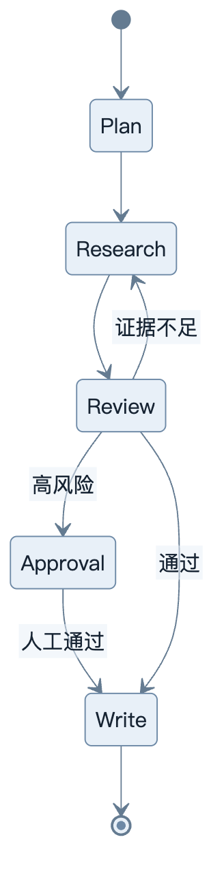
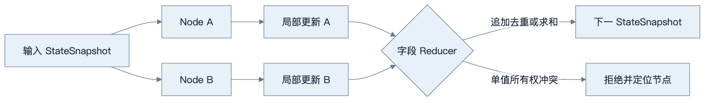
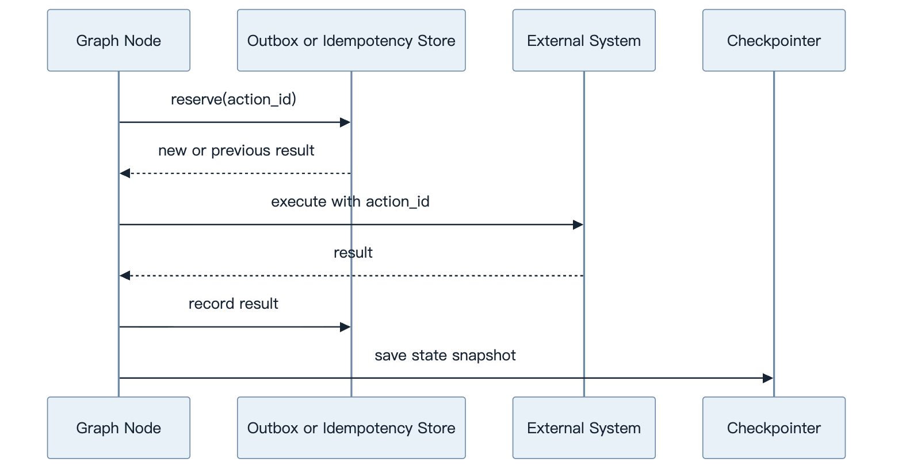
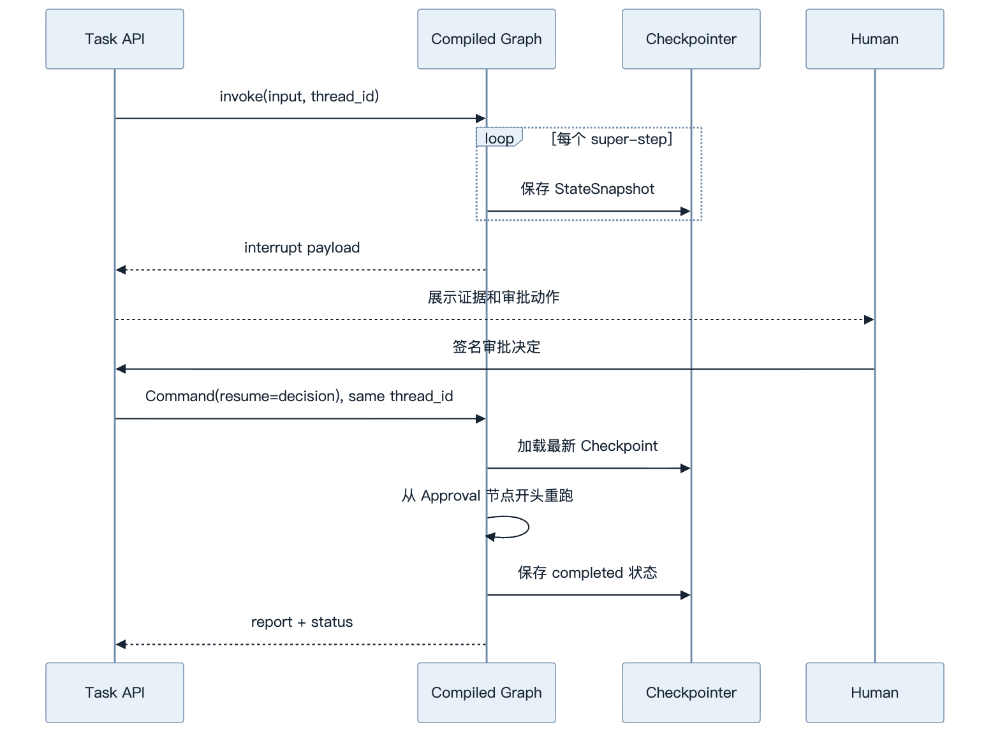
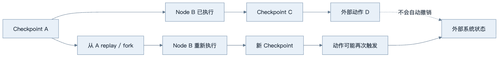
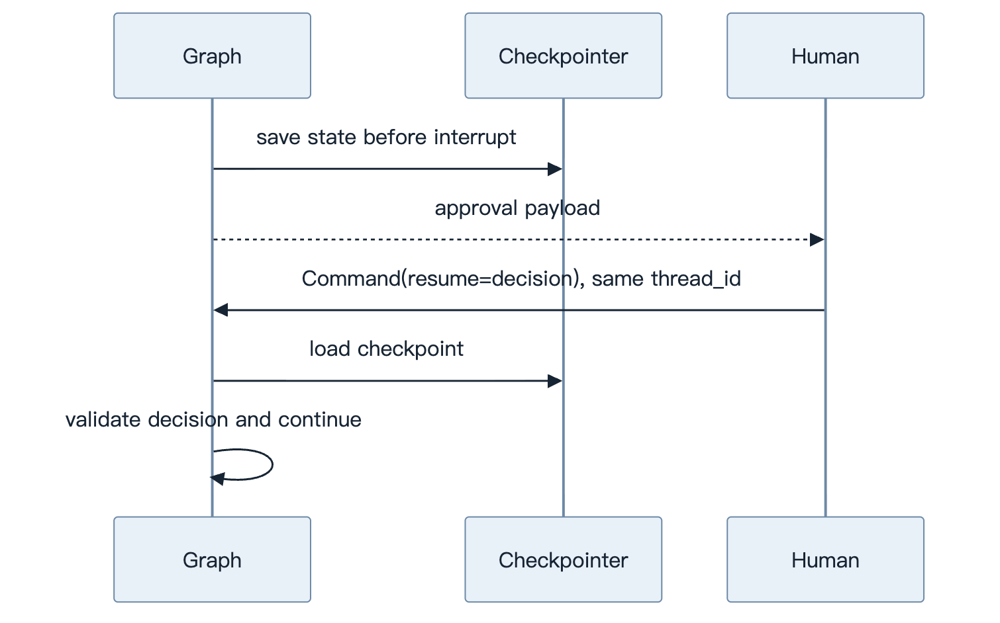

第20章：LangGraph
最后核对日期：2026-07-11；依据官方文档核对，并在 Python 3.12.13、langgraph==1.2.9 上运行项目 8 的 StateGraph、RetryPolicy、InMemorySaver、interrupt 与 Command 恢复测试。
导读、目标与前置知识
LangGraph 用 State、Node、Edge 和 Checkpoint 表达可恢复工作流。本章学习条件边、Reducer、Persistence、Interrupt、Human-in-the-Loop、Subgraph、Retry、Time Travel、Streaming 与 Multi-Agent。
学习目标是能设计、实现和测试一个带持久化与人工中断的图。前置知识为第9—10、17章。
原理与状态图
LangGraph 把工作流表达为显式 State、Node 和 Edge。主图展示研究任务中循环、审批和结束路径。

State 是显式 Schema；Node 接收状态并返回更新；Reducer 决定并行更新如何合并；Checkpoint 支持恢复。Interrupt 把控制交还人类，恢复时必须使用稳定 thread/run 标识。

Reducer 是数据一致性规则，不是便利函数。错误的合并语义会在并行、恢复和重放中产生重复或覆盖。

Checkpoint 只保存图状态，不能自动回滚已经发送的邮件或付款。副作用节点必须有独立的幂等与状态核对机制。
最小实验
最小图包含分类、处理和结束。工程研究 Agent 见项目8，保存计划、证据、重试次数和评审状态；外部副作用节点使用幂等键。Streaming 是事件协议，不应把内部状态全部暴露给客户端。
最小示例直接使用本仓库固定并安装的 langgraph==1.2.9。运行项目测试可以验证 RetryPolicy 在暂时搜索错误后重试、InMemorySaver 保存 Checkpoint、interrupt() 暂停，以及同一 thread_id 通过 Command(resume=...) 恢复：
PYTHONPATH=src .venv/bin/python -m pytest \
tests/test_langgraph_research_app.py -q
InMemorySaver 只适合测试与本地演示；进程结束后状态消失，也不能提供生产多实例所需的持久性。生产选用数据库 Checkpointer 后，要单独测试连接失败、Schema 迁移、并发 thread、保留期和租户授权。
工程案例
项目 8 的研究图由 Plan、Search、Read、Review、Approval、Write 和 Fail 节点构成。Search 节点只对 RuntimeError 使用有限 Retry；Reviewer 证据不足时最多循环规定次数；Approval 使用 interrupt，恢复 payload 必须再次验证；最终报告只引用已保存证据。

官方中断语义要求节点恢复时从节点开头重新执行，而不是从 interrupt() 下一行继续。因此 interrupt 前的数据库写入、通知或外部 API 都会再次发生；应把副作用移到批准后的独立节点，或使其幂等。不要用宽泛 try/except 捕获 interrupt 的控制异常，也不要在同一节点内根据不稳定条件改变多个 interrupt 的顺序。
Reducer 是状态一致性规则
并行节点向同一列表写入时，operator.add 会简单追加，重放或重复输入可能产生重复证据。若业务要求按稳定 ID 去重，应写满足结合律的 Reducer，并测试输入顺序：
from typing import Annotated, TypedDict
def merge_evidence(
left: list[dict[str, str]], right: list[dict[str, str]]
) -> list[dict[str, str]]:
by_url = {item["url"]: item for item in left}
for item in right:
by_url[item["url"]] = item
return [by_url[url] for url in sorted(by_url)]
class ParallelResearchState(TypedDict):
evidence: Annotated[list[dict[str, str]], merge_evidence]
Reducer 必须体现领域语义。对金额求和可能在重放时重复计费，对单值“最后写入获胜”会依赖并行完成顺序。若字段只能由一个节点拥有，就不要用 Reducer 掩盖多写者错误；让运行时拒绝冲突更安全。
Retry 与副作用幂等
RetryPolicy 应只匹配明确暂时异常。项目 8 把搜索 Fake 的 RuntimeError 作为教学故障；生产适配器应区分 429/503、权限拒绝、参数错误和业务无结果。max_attempts 包含首次尝试，所有尝试必须进入统一任务预算。
外部写节点使用由 thread_id + node + business_key 派生的稳定 action ID，并在本地 outbox 或目标服务中做唯一约束。Checkpoint 不是数据库事务：外部动作成功、状态快照保存前进程崩溃时，恢复仍可能重跑节点。
from dataclasses import dataclass
@dataclass(frozen=True)
class ActionResult:
action_id: str
external_id: str
status: str
class IdempotentWriter:
def __init__(self) -> None:
self._results: dict[str, ActionResult] = {}
def execute(self, action_id: str) -> ActionResult:
previous = self._results.get(action_id)
if previous is not None:
return previous
result = ActionResult(action_id, f"external:{action_id}", "completed")
self._results[action_id] = result
return result
内存字典只能说明语义，不能抵抗进程崩溃。真实实现需要持久唯一约束，并在状态未知时向外部系统核实。Time Travel、Retry 和恢复都可能重执行节点，因此共享同一套幂等机制。
Time Travel 的边界
Time Travel 基于 Checkpoint replay 或 fork。调用旧 Checkpoint 后，之前节点的状态结果保留，之后节点会重新执行，包括 LLM、API 和 interrupt；它不是数据库回滚，也不会撤销邮件、工单或付款。update_state 会创建新 Checkpoint，并按字段 Reducer 处理更新，不会修改旧历史。

时间旅行适合调试、比较替代状态和人工修复，不适合宣传为通用 Undo。若需要真正补偿，必须设计业务 Saga 或人工流程。访问历史 Checkpoint 和分叉操作应记录审计，并绑定租户与主体。
失败分析与调试
| 现象 | 常见根因 | 证据 | 修复 |
|---|---|---|---|
Command 后没有恢复旧任务 |
使用了新 thread_id |
invoke config 与 checkpoint history | 保存并复用同一持久 ID |
| 恢复后审批前代码重复执行 | 不理解节点从开头重跑 | interrupt 所在节点 Trace | 副作用移到后续节点或幂等 |
| 并行证据重复 | Reducer 只做列表追加 | super-step 更新与 replay 结果 | 使用稳定 ID 去重 Reducer |
| 节点对权限错误持续重试 | retry_on 太宽 |
异常类型与 attempt span | 只匹配暂时故障 |
| Time Travel 重复发邮件 | 把 replay 当回滚 | checkpoint 后执行节点列表 | action ID、状态核实和警告 |
| 生产重启后状态消失 | 使用 InMemorySaver |
Checkpointer 类型与进程生命周期 | 数据库持久化并测试恢复 |
| State 无法序列化或泄密 | 保存客户端/凭证 | State Schema 与 Checkpoint 内容 | 只存数据和受控引用 |
调试先读取 get_state 和 get_state_history，确认当前值、下一节点、任务与 interrupt；再检查条件边返回值、Reducer 更新和 Retry attempt。不要只看最终异常，因为错误可能来自前一个 super-step 的错误状态。
升级 LangGraph 时固定版本运行项目 8 的直接测试，并增加持久 Checkpointer 集成测试。当前结论只对本仓库安装的 1.2.9 与 2026-08-06 核对的官方文档负责；新的流式事件版本、持久化实现或弃用项需重新验证，不凭记忆改 API。
安全上，thread_id 不应直接采用用户可猜的值且必须在存储查询中绑定租户；interrupt payload 只含审批必要字段；resume 输入用 Pydantic 校验并绑定审批主体、参数哈希与有效期；State 和 Checkpoint 不保存密钥。
误区、调试、实践与安全
图不保证确定性；Checkpoint 不自动解决外部副作用；Time Travel 不能安全重放付款。调试查看每个节点前后状态与路由条件。State 避免存不可序列化客户端和秘密。
总结、练习、面试与阅读
State、Node、Edge 与 Reducer
State 是图的共享数据契约，可使用 TypedDict、dataclass 或 Pydantic；Node 是接收 State 并返回局部更新的同步/异步函数；Edge 定义控制流；Conditional Edge 根据结构化结果选择下一节点。Node 不应就地修改隐藏全局变量，返回值应只包含本节点负责的字段。
当多个节点并行更新同一字段时，Reducer 决定合并语义。例如证据列表应追加去重，计数器应求和，单值状态通常只能由明确所有者覆盖。没有 Reducer 的并行写入可能冲突；错误 Reducer 会让重放产生重复数据。
import operator
from typing import Annotated
from typing_extensions import TypedDict
class ResearchState(TypedDict):
question: str
queries: list[str]
evidence: Annotated[list[str], operator.add]
review_status: str
最小图示例
以下代码展示当前官方 Graph API 的核心形态。本仓库固定 1.2.9 并执行直接测试；升级后必须重新验证 Checkpoint 与 Interrupt 恢复：
from langgraph.graph import END, START, StateGraph
def plan(state: ResearchState) -> dict[str, object]:
return {"queries": [state["question"]], "review_status": "pending"}
def route(state: ResearchState) -> str:
return "finish" if state["review_status"] == "approved" else "research"
builder = StateGraph(ResearchState)
builder.add_node("plan", plan)
builder.add_node("research", research)
builder.add_node("review", review)
builder.add_edge(START, "plan")
builder.add_edge("plan", "research")
builder.add_edge("research", "review")
builder.add_conditional_edges("review", route, {"research": "research", "finish": END})
graph = builder.compile()
图应有明确终止条件。review → research 回路同时受 retry count、Token 与墙钟预算控制，不能只相信 Reviewer 最终会通过。
Checkpoint、Persistence 与恢复
图编译时配置 checkpointer 后，每个 super-step 保存 StateSnapshot，并按 thread 组织。Persistence 支持跨交互 Memory、Human-in-the-Loop、故障恢复和 Time Travel。thread_id 是持久游标，不是任意 UI 会话名；必须绑定租户和主体，防止读取他人状态。
Checkpoint 只覆盖图状态。Node 已发送邮件但在写 checkpoint 前崩溃，恢复后可能再次发送，因此副作用 Node 使用幂等键或 outbox。官方文档说明同一 super-step 中其他成功节点的 pending writes 可保留，恢复策略仍要结合业务语义测试。
Interrupt 与 Human-in-the-Loop
interrupt() 在 Node 或工具中暂停执行，保存 JSON 可序列化 payload；调用方用相同 thread 恢复并通过 Command 提供结果。审批 payload 包含动作、目标、参数摘要和风险。恢复值要再次验证，不能把 UI 返回文本直接当授权令牌。
官方规则要求避免随意重排同一 Node 中的 interrupt，interrupt 前的副作用必须幂等，也不要用宽泛 try/except 吞掉控制异常。等待人工期间任务状态是 paused，不占用 Web Worker；过期审批转为拒绝或重新生成候选。

审批等待期间图处于 paused 状态，不占用 Web Worker；恢复数据仍需 Schema、主体和有效期校验。
Retry、Time Travel 与 Subgraph
Node Retry Policy 用于可重试异常，业务拒绝和无权限不进入 retry。Time Travel 基于 checkpoint replay 或 fork：旧节点结果可复用，checkpoint 之后的模型、API 和 interrupt 会重新执行，结果可能不同。它适合调试和人工探索，不是无副作用的“撤销”。
Subgraph 封装独立状态与流程。官方文档区分每次调用继承 checkpointer、跨 thread 持久和无 checkpoint 等模式。多数一次性专业子任务采用 per-invocation；需要持续对话的专家才保留 per-thread 状态。父子图的 state 映射显式定义，秘密和内部字段不自动传播。
Streaming 与 Multi-Agent
Streaming 可以输出完整 State 快照、Node 增量、消息 Token、interrupt 或自定义事件。对外 API 定义自己的事件 Schema，不把框架内部对象直接传给前端。断线重连依据事件 ID 与 checkpoint，而不是重新运行整个图。
Multi-Agent 在图中通常表现为 Supervisor 路由 Node、Agent-as-Node 或 Subgraph。共享 State 包含任务和 Artifact 引用，不用群聊文本维护唯一事实。每个 Agent 的工具和上下文最小化，Supervisor 也受终止器控制。
调试、测试、安全与适用场景
调试查看 Node 前后 State、Edge 选择、checkpoint history、interrupt 和异常。测试将 Node 当普通函数单测，再用内存 checkpointer 验证路由、恢复、并行 Reducer 和副作用幂等。生产还测数据库 checkpointer、并发 thread 和迁移。
LangGraph 适合状态复杂、需恢复、HITL 或多分支的长流程；简单一次调用或两步固定 Chain 不必引入。State 不保存凭证，checkpoint 加密并按租户授权，Time Travel/状态编辑进入审计。
总结：LangGraph 把控制流和持久状态显式化，但不能自动解决副作用与业务权限。练习：构建带人工批准、checkpoint 和 retry 的三节点图。面试：Reducer 解决什么冲突？Checkpoint 与业务事务有何差异？Time Travel 为什么可能重复动作？延伸阅读：Graph API、Persistence、Interrupts与 Subgraphs 官方文档。代码目录：projects/08-research-workflow/。
练习参考答案
- 三节点图可设
prepare -> approval -> execute。编译时配置 Checkpointer；approval 调用interrupt；API 用相同thread_id和Command(resume=...)恢复；execute 用 action ID 幂等。测试批准、拒绝、过期、重启恢复和重复 resume。 - Reducer 解决同一 super-step 多个局部更新如何合并的问题。它必须符合业务语义并对并行顺序稳定；单值字段若不允许多写者，应拒绝冲突而不是随意选择最后结果。
- Checkpoint 保存图状态快照，不覆盖外部系统事务。邮件已经发送但 Checkpoint 未保存时，恢复会重跑节点；需要 outbox、幂等键、状态核实或补偿流程。
- Time Travel 会从选定 Checkpoint 之后重新执行模型、API 与 interrupt，因此可能再次产生动作。它创建 replay 或 fork，不会撤销已经发生的副作用。
InMemorySaver只用于测试；生产 Checkpointer 要验证持久性、并发隔离、Schema 迁移、加密、TTL、备份恢复和租户授权，并明确thread_id的生命周期。
本章引用
以下资料用于支撑本章的核心原理、工程边界与版本敏感说明：